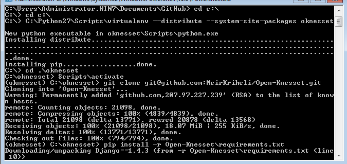

On MS Windows the process is more manual. We’ll start by downloading and installing Python and some packages.
Important
The documentation here assumes you’ll accept defaults:
If you’ve changed those, please adjust the instructions accordingly.
Python 2.7 install (click to enlarge)
Download the latest Python 2.7 MSI installer matching your architecture (32 or 64 bit). As of this writing, the latest one is 2.7.8.
Once downloaded, run the installer, and accept defaults.
Important
The documentation assumes you’ve installed to the default C:\Python27. If it’s not the case, please adjust accordingly.
distribute replaces setuptools and makes our windows install simpler (as setuptools for python2.7 on windows has problems on 64bit platforms and needs a different installation method).
Download the distribute setup script and run it, either automatically via your browser, by double-clicking it in windows explorer or manually by running:
python \path\to\the\download\directory\distribute_setup.py
We’ll install them with distribute. Open a command window, and:
cd c:\Python27\Scripts
easy_install pip
pip install virtualenv
Since compiling those packages (inside the virtualenv) is not an easy task, we’ll install them separately and instruct virtualenv to use python’s global site-packages (not pure, but will make things easier for MS Windows developers).
Install Pillow with easy_install by running:
easy_install Pillow==2.4.0
Download and run the exe install matching you architecture for ujson.
GitHub tools install (click to enlarge)
The Open Knesset code is hosted on GitHub, and uses git for distributed version control. The easiest way to install them on windows is with GitHub for Windows (download from the top right corner).
Run the installer, it’ll start and download the rest of the needed packages:
Run the GitHub program (you should have an icon on the desktop), and sign in with your username and password. This should also extract git, and create a ssh key and upload the public part to GitHub.
From the desktop (or programs menu) run Git Shell , it’s a shell with git already configured, in the shell:
cd C:\
C:\Python27\Scripts\virtualenv --distribute --system-site-packages oknesset
Note
If this command fails:
You probably have an older virtualenv installed. The quickest work-around is to replace it with the latest version:
cd C:\Python27\Lib\site-packages
del .\virtualenv*
..\..\Scripts\easy_install.exe virtualenv
Another problem may be that you had PYTHONPATH environment variable configured, in that case, unset it.
We need to activate the virtual environment (it mainly modifies the paths so that correct Lib and Scripts directories will be found) each time we wish to work on the code.
cd oknesset
Scripts\activate
Note the changed prompt with includes the virtualenv’s name.
First, we need to fork the Open-Knesset repository on github.
Now we’ll clone the forked repository into the virutalenv. Make sure you’re in the oknesset directory and run:
git clone git@github.com:your-name/Open-Knesset.git
Replace your-username with the username you’ve registered at git hub.
In the Git Shell command window, with the virtualenv activated, inside the oknesset directory, run:
pip install -r Open-Knesset/requirements.txt
And wait ... See an example in the following screenshot:
Once done, proceed to Initial Testing, Development DB & Server.
{kind=link}
{kind=link}